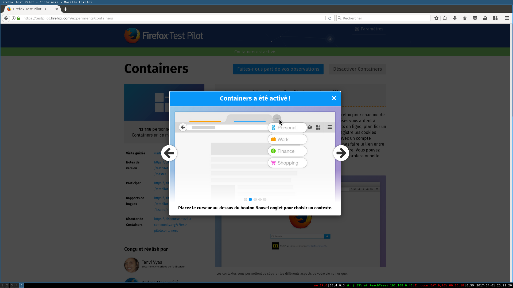
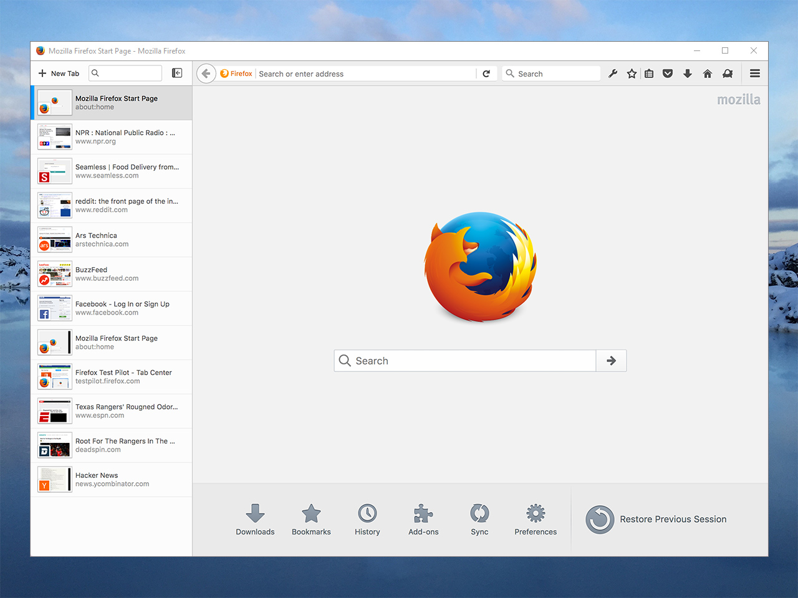
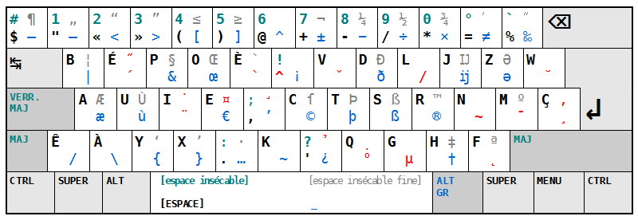

Le weekend du 1er avril a eu lieu la 18ème édition des Journées du logiciel libre à Lyon. Les JDLL, c'est un programme très riche, proposant des conférences, des ateliers et des animations autour du numérique et des technologies du libre.
Avant de vous présenter ce que j'ai pu découvrir, je tenais à remercier toutes les personnes qui ont rendu ces journées possibles, les organisateurs, les partenaires ainsi que les sponsors.
Un grand merci aux associations ALDIL, Illyse et à la Maison pour tous - Salle des Rancy.

Pour démarrer, je me suis rendu au village associatif pour découvrir ce que proposent les stands.
Mozilla
Nous vous attendons sur notre stand au #jdll2017 @jdll_lyon pic.twitter.com/y3WiiDB2hR
— Mozilla francophone (@mozilla_fr) 1 avril 2017
J'ai pu découvrir la version Nightly de Firefox. C'est une version n + 3 par rapport à la version stable. Elle comprend des nouvelles fonctionnalités "à tester". C'est à dire que si ces fonctionnalités sont bien reçues par les utilisateurs, elles seront alors ajoutées aux futures versions stables. Cela permet ainsi aux développeurs de Firefox d'avoir du feedback pour améliorer leur navigateur. Par ailleurs, si vous souhaitez tester des nouvelles capacités de Firefox sans avoir à utiliser la version Nightly, il est possible d'installer le module Firefox Test Pilot. Ce module vous permettra de tester des nouvelles fonctions de Firefox sans pour autant être bloqué car vous pourrez les activer/désactiver à votre gré. De plus, cela permet aux concepteurs et aux développeurs d'obtenir des retours sur ces dernières.
Je vous conseille particulièrement la fonctionnalité "Containers" qui vous permettra de contextualiser vos onglets. En effet, cette fonctionnalité vous permettra de créer différents profils de navigation suivant vos usages.

Ainsi, vous pourrez définir vos comptes personnels dans un conteneur dédié, puis définir vos informations de connexion professionnelle dans un autre conteneur.
Une autre fonctionnalité qui a attiré mon attention est "Tab Center". Cette dernière permet d'avoir ses onglets sur le côté et elle se couple très bien aux conteneurs.

RMLL
J'ai ensuite pu échanger avec des membres du RMLL, Rencontres Mondiales du Logiciel Libre. Sur les mêmes thèmes que cette manifestation lyonnaise, les RMLL se dérouleront cette année à Saint-Étienne du 1er au 7 juillet, avec comme intervants Richard Stallman, Cédric Villani et bien d'autres. Je vous laisse le lien de leur site RMLL.
Bépo ?
Je me suis ensuite rendu sur un stand présentant le clavier Bépo. Il s'agit d'une disposition des touches du clavier inspirée de la méthode Dvorak pour la langue française créée en 2005.

Cette dernière permet de taper plus vite car la distance parcourue par nos doigts est réduite par rapport à un clavier azerty. Ce clavier, adapté à la langue française, permettrait également de réduire les risques de TMS.
PostgreSQL et la réplication
J'ai terminé en assistant à une conférence autour de PostgreSQL et de la réplication. Cette dernière fut animée par Laetitia Avrot. En ce cours laps de temps, Laetitia a résumé les principales différences entre les bases de données SGBDR et NoSQL. Puis, elle nous a présenté les différents types de réplication, suivant quelle version de PostgreSQL et avec quels outils. Enfin, elle a terminé en présentant suivant les problématiques et les cas d'usages, quels types de réplication sont les plus adaptés. Ce fut une présentation très dense, très dynamique et très bonne!
Pour terminer, je vous conseille également le blog de Laetitia Avrot : https://laetitia-avrot.blogspot.fr/p/but-de-ce-blog.html. Elle y répertorie des astuces, des explications autour de l'univers des base de données.
Mon passage aux JDLL fut bref car je n'ai pas pu assister à toutes les conférences qui me faisaient envie. Malgré cela, les JDLL sont un rendez-vous auquel j'assiste tous les ans et que j'aime beaucoup car l'ambiance y est excellente. On y trouve des sujets couvrant un panel très large de domaines et c'est gratuit! Je ne peux que vous encourager à vous y rendre. A l'année prochaine!